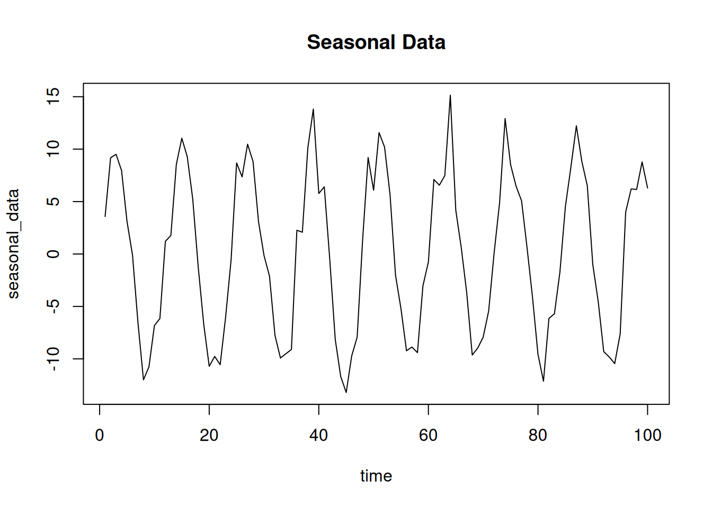
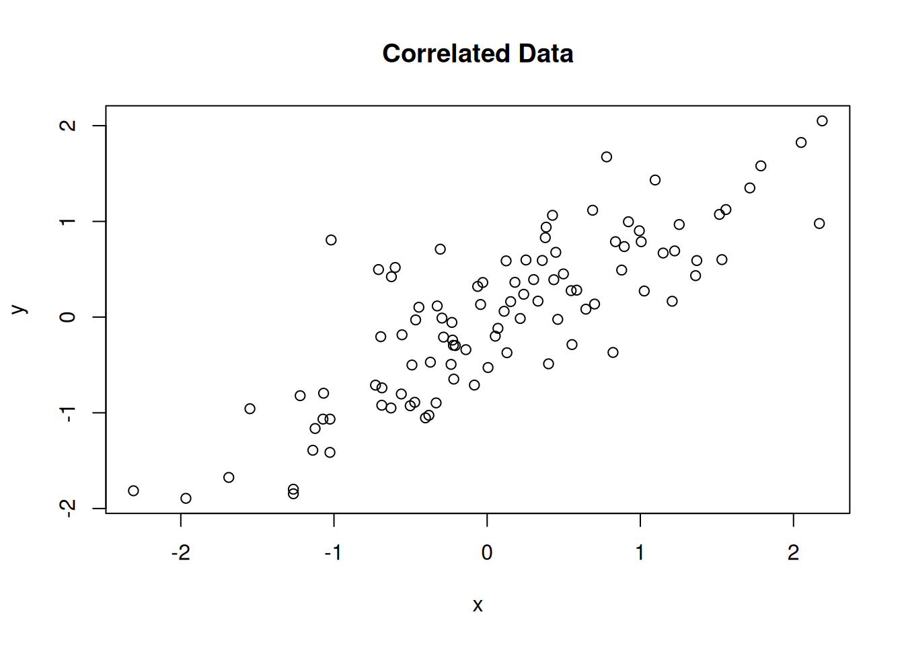
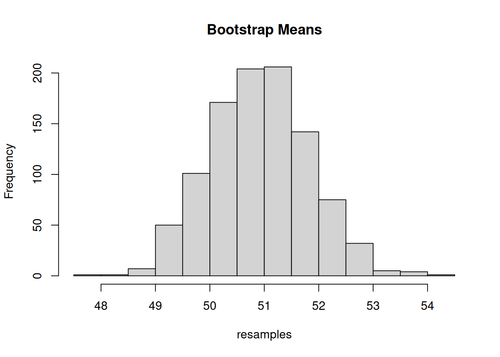

# Generate 10 random numbers between 0 and 1
runif(10, min = 0, max = 1) [1] 0.5381849 0.1762189 0.8714240 0.8766567 0.7341599 0.6023519 0.1306099
[8] 0.1659936 0.9104378 0.7376089Random Numbers, Distributions, and Patterns
Raju Rimal
November 30, 2024
March 19, 2025
Simulation is a powerful tool in R that allows users to generate synthetic data for various purposes, such as testing algorithms, validating statistical methods, or modeling hypothetical scenarios. This blog explores how to simulate different types of data in R, ranging from basic numeric data to complex datasets mimicking real-world scenarios.
Simulating data can be useful for:
R provides a suite of functions for generating random numbers from various distributions.
[1] 1 2 3 4 5 6 7 8 9 10[1] 1 2 3 1 2 3 1 2 3[1] 1 1 2 2 3 3# Simulate with unequal probabilities
weighted_categories <- sample(c("A", "B", "C"), size = 10, replace = TRUE, prob = c(0.5, 0.3, 0.2))
print(weighted_categories) [1] "A" "B" "A" "B" "C" "A" "A" "A" "B" "C"# Simulate seasonal data with noise
time <- 1:100
seasonal_data <- 10 * sin(2 * pi * time / 12) + rnorm(100, sd = 2)
plot(time, seasonal_data, type = "l", main = "Seasonal Data")
library(MASS)
# Define mean vector and covariance matrix
mu <- c(0, 0)
sigma <- matrix(c(1, 0.5, 0.5, 1), nrow = 2)
# Generate 100 samples
multivariate_data <- mvrnorm(n = 100, mu = mu, Sigma = sigma)
print(head(multivariate_data)) [,1] [,2]
[1,] 2.2618467 1.54660453
[2,] 1.5129275 0.76023849
[3,] 0.2396470 -0.69889171
[4,] 0.9966765 -0.05583679
[5,] -0.1402492 -0.57740869
[6,] -0.5780315 -0.24685232# Generate correlated data
set.seed(123)
x <- rnorm(100)
y <- 0.8 * x + rnorm(100, sd = 0.5)
plot(x, y, main = "Correlated Data")
set.seed(123)
# Simulate a dataset with multiple types of variables
data <- data.frame(
ID = 1:100,
Age = sample(20:60, 100, replace = TRUE),
Gender = sample(c("Male", "Female"), 100, replace = TRUE),
Income = rnorm(100, mean = 50000, sd = 10000),
Passed = sample(c(TRUE, FALSE), 100, replace = TRUE)
)
print(head(data)) ID Age Gender Income Passed
1 1 50 Male 52353.87 FALSE
2 2 34 Female 50779.61 FALSE
3 3 33 Male 40381.43 FALSE
4 4 22 Male 49286.92 TRUE
5 5 56 Male 64445.51 FALSE
6 6 33 Male 54515.04 FALSE ID Age Gender Income Passed
1 1 50 Male 52353.87 FALSE
2 2 34 Female 50779.61 FALSE
3 3 33 Male 40381.43 FALSE
4 4 22 Male 49286.92 TRUE
5 5 56 Male 64445.51 FALSE
6 6 33 Male NA FALSEMonte Carlo simulations involve repeated random sampling to compute a result.
Bootstrapping involves resampling a dataset to estimate statistics.
set.seed(123)
# Original data
original_data <- rnorm(100, mean = 50, sd = 10)
# Bootstrap resamples
resamples <- replicate(1000, mean(sample(original_data, replace = TRUE)))
hist(resamples, main = "Bootstrap Means")
set.seed() to ensure reproducibility of random data.Simulating data in R is an essential skill that allows you to test ideas, compare methods, and better understand statistical principles. By mastering these techniques, you can create synthetic datasets tailored to your needs, whether for research, teaching, or debugging.